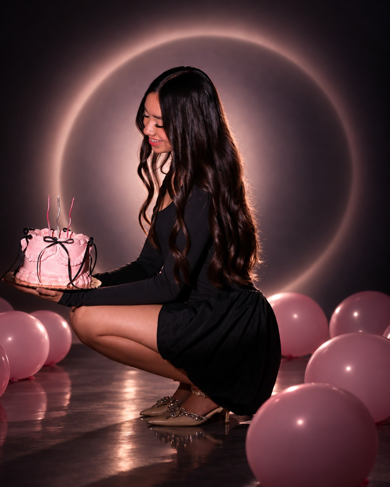

CEREMONIA RELIGIOSA · 6:30 P. M.
Parroquia del Espíritu Santo
C. Miguel Ramos Arizpe 385, Col. Magaña,
44800 Guadalajara, Jalisco.

COMIENZA LA HISTORIA ↓HAY MOMENTOS QUE SE GUARDAN PARA SIEMPRE
Quince años de sueños, sonrisas y recuerdos.
Hoy comienza un nuevo capítulo y me encantaría vivirlo contigo.
Hagamos de esta noche un recuerdo inolvidable.
PARA ESCRIBIR ESTA NUEVA PÁGINA
Pedro López Robles ✝️
Nelly Tadeo Camarena
Yair López Robles
Karen González Landeros
GUARDA LA FECHA
Viernes 4 de diciembre de 2026
CEREMONIA RELIGIOSA · 6:30 P. M.
C. Miguel Ramos Arizpe 385, Col. Magaña,
44800 Guadalajara, Jalisco.
RECEPCIÓN · 8:00 P. M.
Av. Patria Ote. 211B, Col. 20 de Noviembre,
45404 Guadalajara, Jalisco.
CÓDIGO DE VESTIMENTA
Vístete de elegancia para celebrar conmigo.
Te pedimos evitar el color rosa en tu vestimenta.
UN DETALLE CON CARIÑO
Tu presencia es el regalo más especial.
Si deseas tener un detalle conmigo, agradeceré mucho tu cariño.
PEDACITOS DE MI HISTORIA
Sonrisas que se quedan.
Recuerdos que apenas comienzan.
TOCA LAS FOTOS PARA VERLAS COMPLETAS
TÚ ERES PARTE DE ESTA HISTORIA
Me hará muy feliz compartir esta noche contigo.
Prepara tu respuesta aquí.
Confirma tu asistencia por WhatsApp al 33 1839 5106.